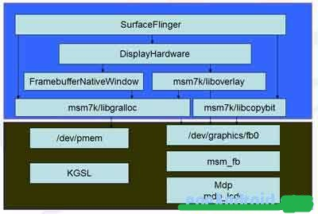

Android里的FrameBuffer
FrameBuffer 在Android中并不像在其它GUI那样直观，抽象的层次比较多，加上GUI的更新是通过OpenGLES来做的。所以让人很难搞清GUI更新的整个流程。
效果图：

1.SurfaceFlinger是一个服务，主要是负责合成各窗口的Surface，然后通过OpenGLES显示到FrameBuffer上。SurfaceFlinger本身比较重要而且比较复杂。
2.DisplayHardware是对显示设备的抽象，包括FrameBuffer和Overlay。它加载FrameBuffer和Overlay插件，并初始化OpenGLES:
mNativeWindow = new FramebufferNativeWindow();framebuffer_device_t const * fbDev = mNativeWindow->getDevice();
if (hw_get_module(OVERLAY_HARDWARE_MODULE_ID, &module) == 0) {
overlay_control_open(module, &mOverlayEngine);
}
surface = eglCreateWindowSurface(display, config, mNativeWindow.get(), NULL);
eglMakeCurrent(display, surface, surface, context);
3.FramebufferNativeWindow 是framebuffer 的抽象，它负责加载libgralloc，并打开framebuffer设备。
FramebufferNativeWindow并不直接使用 framebuffer，而是自己创建了两个Buffer：
queueBuffer负责显示一个Buffer到屏幕上，它调用fb->post去显示。
dequeueBuffer获取一个空闲的Buffer，用来在后台绘制。
这两个函数由eglSwapBuffers调过来，调到
egl_window_surface_v2_t::swapBuffers：nativeWindow->queueBuffer(nativeWindow, buffer);
nativeWindow->dequeueBuffer(nativeWindow, &buffer);
4.msm7k/liboverlay是Overlay的实现，与其它平台不同的是，高通平台上的Overlay并不是提供一个framebuffer设备，而通过fb0的ioctl来实现的，ioctl分为两类操作：
OverlayControlChannel用于设置参数，比如设置Overlay的位置，宽度和高度：
bool OverlayControlChannel::setPosition(int x, int y, uint32_t w, uint32_t h) { ov.dst_rect.x = x;
ov.dst_rect.y = y;
ov.dst_rect.w = w;
ov.dst_rect.h = h;
ioctl(mFD, MSMFB_OVERLAY_SET, &ov);
}
OverlayDataChannel用于显示Overlay，其中最重要的函数就是queueBuffer:
bool OverlayDataChannel::queueBuffer(uint32_t offset) { mOvData.data.offset = offset;
ioctl(mFD, MSMFB_OVERLAY_PLAY, odPtr))
}
5.msm7k/libgralloc 是显示缓存的抽象，包括framebuffer和普通Surface的Buffer。framebuffer只是/dev/graphic/fb0的包装，Surface的Buffer则是对/dev/pmem、ashmem和GPU内存(msm_hw3dm)的包装，它的目标主要是方便硬件加速，因为 DMA传输使用物理地址，要求内存在物理地址上连续。
6.msm7k/libcopybit这是2D加速库，主要负责Surface的拉伸、旋转和合成等操作。它有两种实现方式：
copybit.cpp: 基于fb0的ioctl(MSMFB_BLIT)的实现。
copybit_c2d.cpp: 基于kgsl的实现，只是对libC2D2.so的包装，libC2D2.so应该是不开源的。
7.pmem
misc/pmem.c: 对物理内存的管理，算法和用户空间的接口。
board-msm7x27.c定义了物理内存的缺省大小：
define MSM_PMEM_MDP_SIZE 0x1B76000define MSM_PMEM_ADSP_SIZE 0xB71000
define MSM_PMEM_AUDIO_SIZE 0x5B000
define MSM_FB_SIZE 0x177000
define MSM_GPU_PHYS_SIZE SZ_2M
define PMEM_KERNEL_EBI1_SIZE 0x1C000